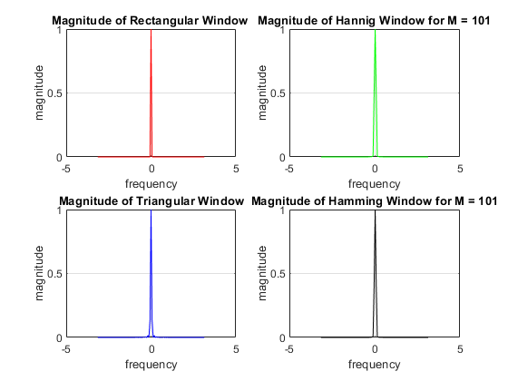
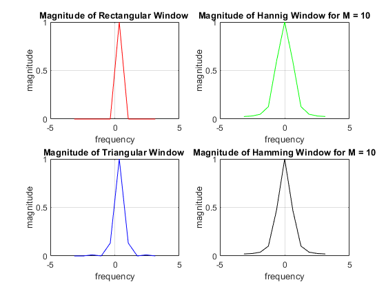

Digital Signal Processing MATLAB HW - q3
Professor: Dr. Sheikhzadeh Author: [SeyedAli] - [SeyedHosseini] E-mail: [alisnake@aut.ac.ir] %which I`m about to change ASAP University: Amirkabir University of Technology
Contents
Clear recent data
clear; close all; clc;
M = 50 and defining Variables and Windows
M = 50; n = 0 : 1 : M ; [R , n1] = stepseq(0,0,M); % R = heaviside(n ); %%Rectangular Window % R = rectangle('Position',[0 0 M 1]) C1 = 0.5*(1 - cos((2*pi.*n)/(M - 1))); Cm = C1.* R; %Hannig window T1 = ( 1 - ((abs(M - 1 - 2.*n))/M -1)); Tm = T1.* R ; %triangular Window H1 = 0.5*(0.56 - 0.46.*(cos((2*pi.*n)/(M - 1)))); Hm = H1.* R; %Hamming Window w = -pi : 2*pi/M : pi;
plotting DTFTs
clc; %Rectangular DTFT [f ,Rf]= DTFT(R , M); % fourier Transform of R window Rf = Rf/max(abs(Rf)); %Normalized Rf so that max value is 1 figure(1) subplot(221) plot(f,abs(Rf),'r') grid on; title("Magnitude of Rectangular Window ") axis([-5 5 0 1]) ylabel("magnitude") xlabel("frequency") %Hannig DTFT Cf = fftshift(fft(Cm)); %DTFT of hannig window Cf = Cf/max(abs(Cf)); %Normalized Cf so that max value is 1 subplot(222) plot(w,abs(Cf),'g') grid on; title("Magnitude of Hannig Window for M = 50") axis([-5 5 0 1]) ylabel("magnitude") xlabel("frequency") %Triangular DTFT [f1 ,Tf]= DTFT(Tm , M); % fourier Transform of R window Tf = Tf/max(abs(Tf)); %Normalized Rf so that max value is 1 subplot(223) plot(f1,abs(Tf),'b') grid on; title("Magnitude of Triangular Window ") axis([-5 5 0 1]) ylabel("magnitude") xlabel("frequency") %Hamming DTFT Hf = fftshift(fft(Hm)); %DTFT of hannig window Hf = Hf/max(abs(Hf)); %Normalized Cf so that max value is 1 subplot(224) plot(w,abs(Hf),'k') grid on; title("Magnitude of Hamming Window for M = 50") axis([-5 5 0 1]) ylabel("magnitude") xlabel("frequency")
M = 101 and defining Variables and Windows
clear; clc; M = 101; n = 0 : 1 : M ; [R , n1] = stepseq(0,0,M); % R = heaviside(n ); %%Rectangular Window % R = rectangle('Position',[0 0 M 1]) C1 = 0.5*(1 - cos((2*pi.*n)/(M - 1))); Cm = C1.* R; %Hannig window T1 = ( 1 - ((abs(M - 1 - 2.*n))/M -1)); Tm = T1.* R ; %triangular Window H1 = 0.5*(0.56 - 0.46.*(cos((2*pi.*n)/(M - 1)))); Hm = H1.* R; %Hamming Window w = -pi : 2*pi/M : pi;
plotting DTFTs for M = 101
clc; %Rectangular DTFT [f ,Rf]= DTFT(R , M); % fourier Transform of R window Rf = Rf/max(abs(Rf)); %Normalized Rf so that max value is 1 figure(2) subplot(221) plot(f,abs(Rf),'r') grid on; title("Magnitude of Rectangular Window ") axis([-5 5 0 1]) ylabel("magnitude") xlabel("frequency") %Hannig DTFT Cf = fftshift(fft(Cm)); %DTFT of hannig window Cf = Cf/max(abs(Cf)); %Normalized Cf so that max value is 1 subplot(222) plot(w,abs(Cf),'g') grid on; title("Magnitude of Hannig Window for M = 101") axis([-5 5 0 1]) ylabel("magnitude") xlabel("frequency") %Triangular DTFT [f1 ,Tf]= DTFT(Tm , M); % fourier Transform of R window Tf = Tf/max(abs(Tf)); %Normalized Rf so that max value is 1 subplot(223) plot(f1,abs(Tf),'b') grid on; title("Magnitude of Triangular Window") axis([-5 5 0 1]) ylabel("magnitude") xlabel("frequency") %Hamming DTFT Hf = fftshift(fft(Hm)); %DTFT of hannig window Hf = Hf/max(abs(Hf)); %Normalized Cf so that max value is 1 subplot(224) plot(w,abs(Hf),'k') grid on; title("Magnitude of Hamming Window for M = 101") axis([-5 5 0 1]) ylabel("magnitude") xlabel("frequency")
M = 10 and defining Variables and Windows
clear; clc; M = 10; n = 0 : 1 : M ; [R , n1] = stepseq(0,0,M); % R = heaviside(n ); %%Rectangular Window % R = rectangle('Position',[0 0 M 1]) C1 = 0.5*(1 - cos((2*pi.*n)/(M - 1))); Cm = C1.* R; %Hannig window T1 = ( 1 - ((abs(M - 1 - 2.*n))/M -1)); Tm = T1.* R ; %triangular Window H1 = 0.5*(0.56 - 0.46.*(cos((2*pi.*n)/(M - 1)))); Hm = H1.* R; %Hamming Window w = -pi : 2*pi/M : pi;
plotting DTFTs for M = 10
clc; %Rectangular DTFT [f ,Rf]= DTFT(R , M); % fourier Transform of R window Rf = Rf/max(abs(Rf)); %Normalized Rf so that max value is 1 figure(3) subplot(221) plot(f,abs(Rf),'r') grid on; title("Magnitude of Rectangular Window ") axis([-5 5 0 1]) ylabel("magnitude") xlabel("frequency") %Hannig DTFT Cf = fftshift(fft(Cm)); %DTFT of hannig window Cf = Cf/max(abs(Cf)); %Normalized Cf so that max value is 1 subplot(222) plot(w,abs(Cf),'g') grid on; title("Magnitude of Hannig Window for M = 10") axis([-5 5 0 1]) ylabel("magnitude") xlabel("frequency") %Triangular DTFT [f1 ,Tf]= DTFT(Tm , M); % fourier Transform of R window Tf = Tf/max(abs(Tf)); %Normalized Rf so that max value is 1 subplot(223) plot(f1,abs(Tf),'b') grid on; title("Magnitude of Triangular Window ") axis([-5 5 0 1]) ylabel("magnitude") xlabel("frequency") %Hamming DTFT Hf = fftshift(fft(Hm)); %DTFT of hannig window Hf = Hf/max(abs(Hf)); %Normalized Cf so that max value is 1 subplot(224) plot(w,abs(Hf),'k') grid on; title("Magnitude of Hamming Window for M = 10") axis([-5 5 0 1]) ylabel("magnitude") xlabel("frequency")
Function Step Sequence
function [x,n] = stepseq(n0,n1,n2) % Generates x(n) = u(n-n0); n1 <= n <= n2 % ------------------------------------------ % [x,n] = stepseq(n0,n1,n2) % n = [n1:n2]; x = [(n-n0) >= 0]; end
M point DTFT (part a)
function [f, fft_sig] = DTFT(signal, M) if (length(signal) < M) error('M point is not larger than signal length!!'); end fft_sig = abs(fftshift(fft(signal, M))); f = linspace(-pi, pi, M); end